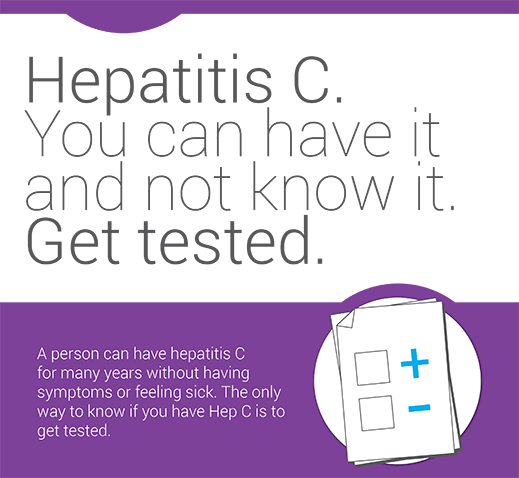

Hepatitis C Key Messages - Testing

-
About 250,000 people are living with Hep C in Canada. Many people do not know that they have Hep C.
-
It takes two blood tests to tell if you have Hep C:
-
The first test will tell if you have had contact with the Hep C virus in the past. This first test cannot tell if you have Hep C right now.
-
A second test is needed to tell if there is active virus in your body.
-
You may also want to discuss with your healthcare worker getting tests for other viruses like HIV, Hep A and Hep B, because these viruses are passed on from person to person in similar ways.
-
With the right tests, you will have the full picture and can decide what to do next about your health.
-
There is no vaccine or immunity for Hep C. Treatment can cure Hep C in many people, but you can get infected with Hep C again.
-
Ask your healthcare worker about getting tested for Hep C.